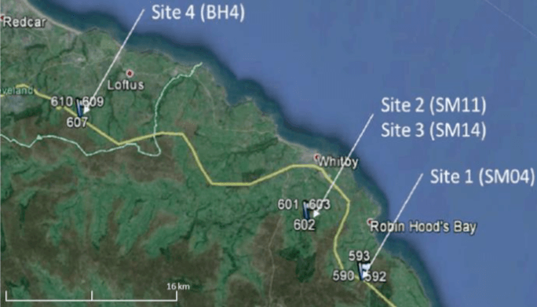

Atomic Dielectric Resonance Survey Results for Potash Exploration with Sirius Minerals, Yorkshire, UK
Project aims
Achieve a proof of concept of the ADR technology with regards to helping to identify polyhalite deposits. To Help Sirius Minerals PLC to understand the processing methodology of ADR by Adrok. To assess ADR’s potential capabilities in order to outline the tools potential contribution to differentiating between different lithologies, specifically the Staithes Sandstone and Redcar Mudstone.
Exploration/Project challenges
Exploration area is along the North Yorkshire Coast (Figure 1), A UK national park. This is a chance for Adrok to prove that it is capable of non destructive geophysical exploration, as the client is planning on tunnelling under the national park to create an underground Ore conveyer from Scarborough to Middlesbrough. No training data was made available for Adrok to use for initial comparison for this project. Therefore Adrok has had to conduct this project blind.
Geological context
 Figure 1: Location map of the UK fieldwork survey location.Within the resource area is defined polyhalite reserves of 280 million tonnes. Polyhalite is a hydrated potassium, calcium and magnesium sulphate. The projects polyhalite mineral deposit occurs within the Zechstein Group in the North Sea Basin and consists predominantly of two seams of polyhalite which are called the Shelf Seam and the Basin Seam. The evapourites that host the projects polyhalite mineralisation were deposited around 250 million years ago in the Zechstein Basin, a complex inland depression that covered parts of what are now Germany, Poland, Denmark and the United Kingdom.
The basin was a long lived feature, with evapourite deposition spanning five to six million years. Resource modelling undertaken by the client has confirmed the presence of two polyhalite seams and the resultant JORC classified mineral resource is shown in the table below and represents the world’s largest and highest grade known polyhalite resource ~ 250 million tonnes of polyhalite1.
Figure 2: Adrok field survey set up for data collection.Adrok’s results
High Dielectrics are normally associated with areas that are wet or metallic and areas of relatively low dielectrics and normally dry; are exposed to air or have greater concentrations of organic material. At SM04, uniquely low dielectrics at 1200m to 1600m were found in Adroks Dielectric log (Figure 3). Based on the depth and the uniqueness of these results it was interpreted as highlighting the Zechstein Group of halite layers.
Figure 3: ADR Dielectric results interpreted to show the Zechstein Group halites. Figure 4: Spectroscopy results using the collected core samples as reference identifying the composition of field data at a suspected polyhalite interval.A spectral component was undertaken for this project, where an Adrok team was sent to scan core sample at Sirius Minerals core warehouse. The spectroscopy results (Figure 4) highlight how the subimages taken at the polyhalite interval (Figure 5) have a clear polyhalite composition. This needs refining as other chemical compositions were found alongside the polyhalite, however this is expected as the samples provided were rarely pure polyhalite; and were often contaminated with other host rock.
Figure 5: Harmonics results showing the log response for the interpreted polyhalite zone.Client Benefits
Benefits to the client include being able to identify possible polyhalite locations below 1200m without expensive drilling, this would allow the client to complement its drilling program, reduce costs in defining the polyhalite resource. Spectrometry results from the core samples can be used to define the chemical composition of the polyhalite resource, allowing for better JORC reporting cutting costs when extracting the polyhalite from the subsurface. All this can be done from the surface by a small and portable ADR scanner. Avoiding the destruction of the overlying national park and its associated costs, both financial and in public relations.